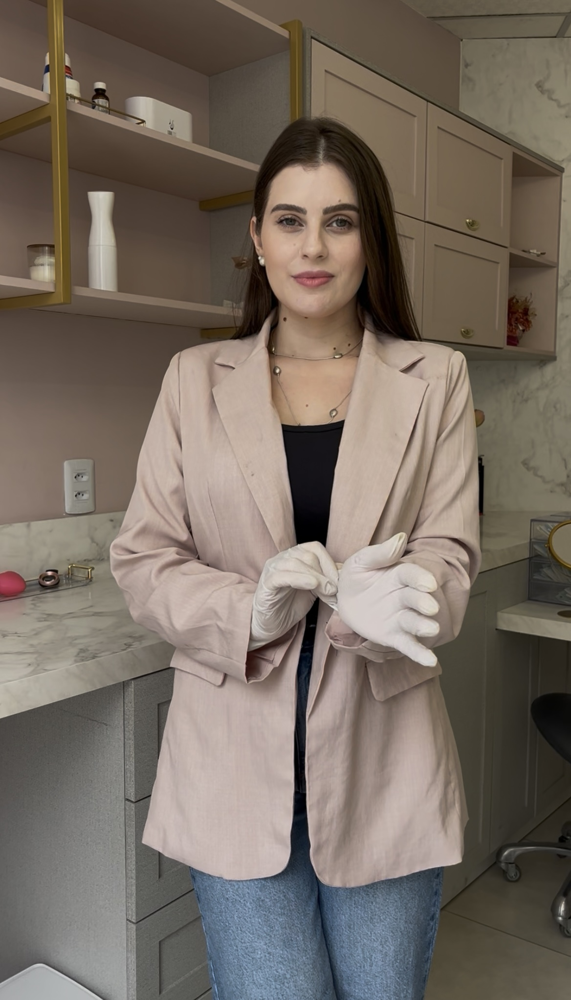
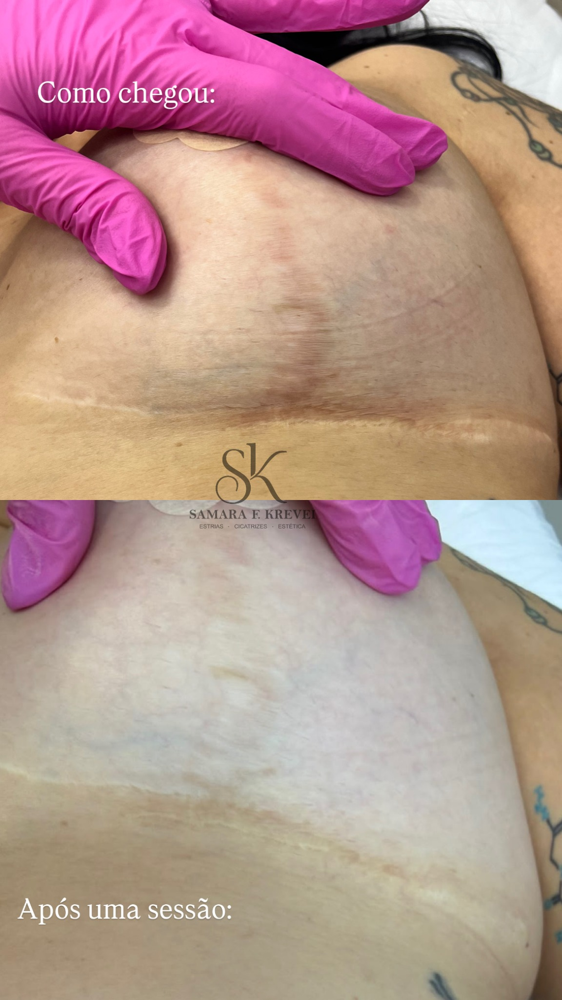
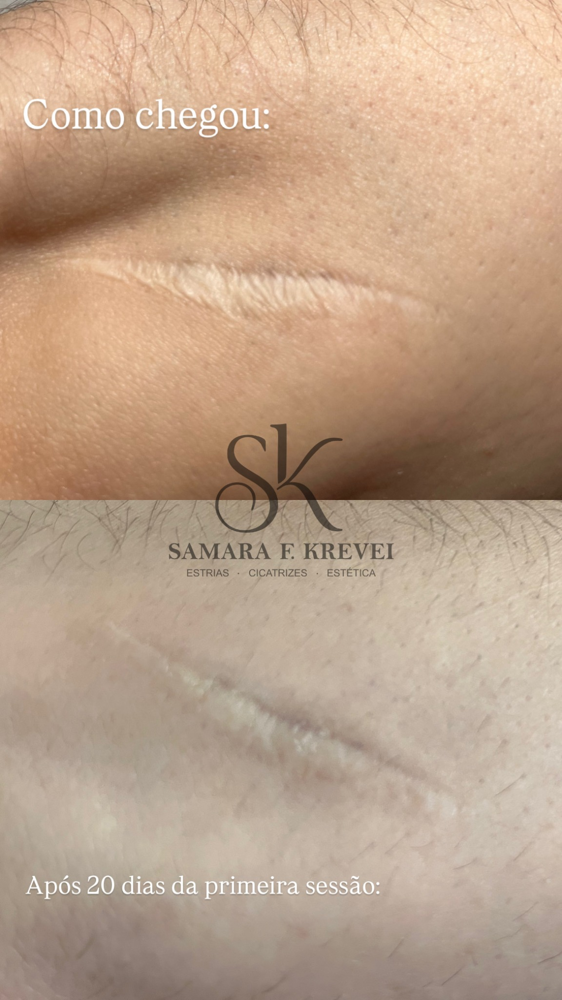
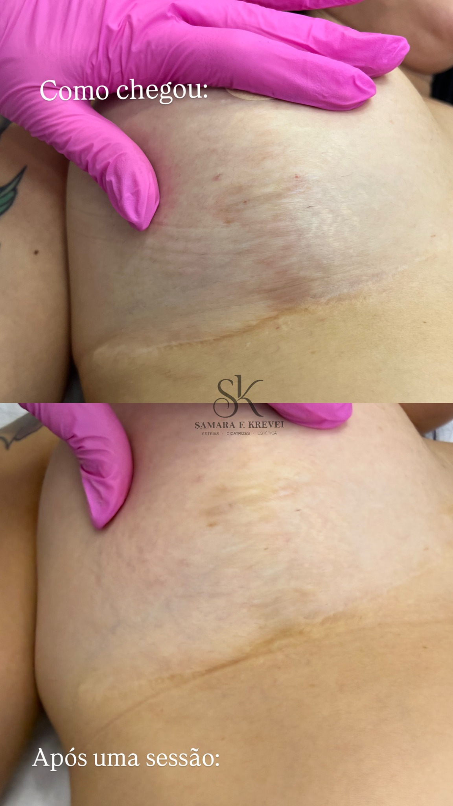
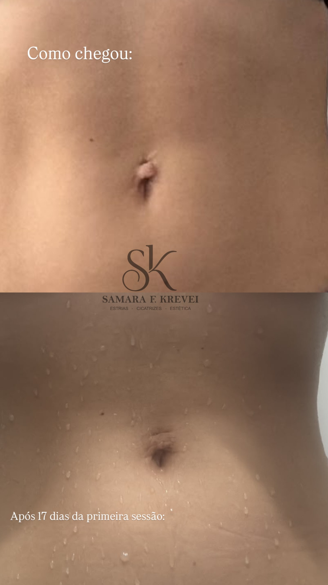
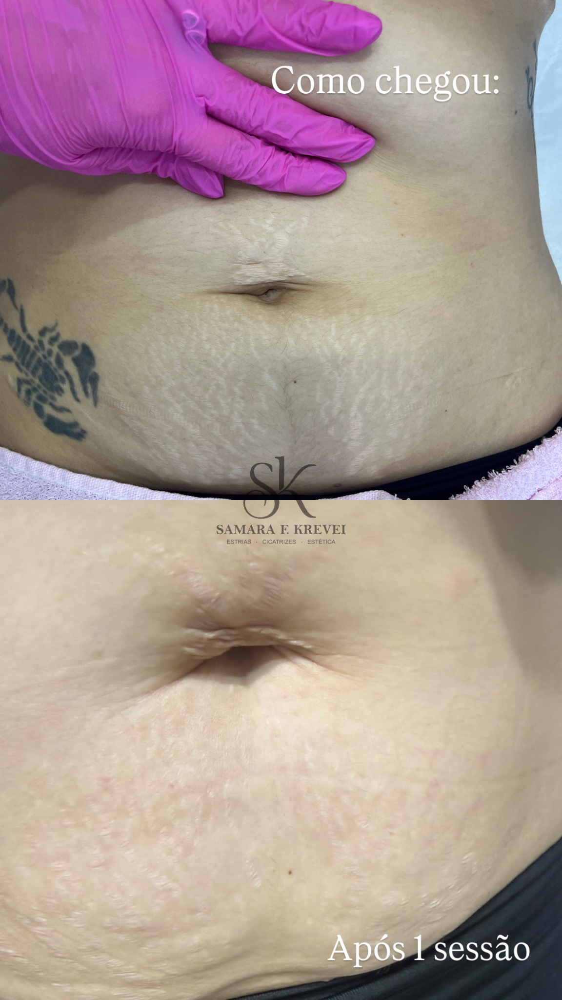
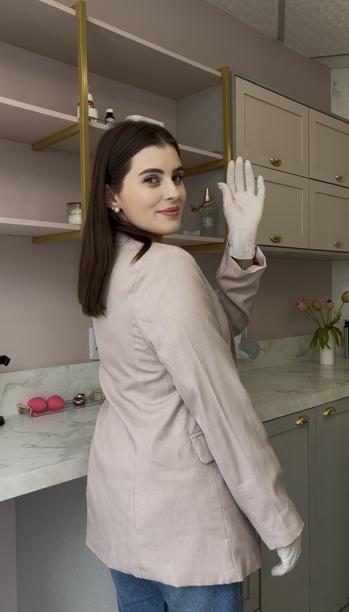

Estria
Ponto de partida

Estrias · Cicatrizes · Cuidado estético
Um atendimento individualizado, cuidadoso e pensado para as necessidades da sua pele.
Conheça o métodoSamara F. Krevei · Especialista em estrias e cicatrizes
A pele tem sua própria história
Registros reais enviados pela profissional. Cada pele responde de um jeito e os resultados podem variar.





Deslize para ver os outros registros
Imagens compartilhadas pela profissional. Evolução, tempo e resultados variam de pessoa para pessoa.
Entenda a pele
Cremes hidratantes ajudam no conforto e na aparência superficial da pele, mas não costumam resolver as estrias sozinhos. Como as estrias envolvem camadas mais profundas, a avaliação profissional orienta os cuidados adequados para cada pessoa.
A avaliação é individual. Indicações, cuidados e resultados dependem de cada pessoa e devem ser conversados com a profissional.
Hidratação
Atenção à superfície e à rotina de cuidados.
Camadas da pele
A ilustração mostra a diferença entre superfície e derme.
Conheça o processo
Uma representação ilustrativa das etapas descritas pela profissional.
Ponto de partida
Representação do dermógrafo
Resultado ilustrativo
As imagens são ilustrativas e não garantem um resultado específico. Cada caso precisa de avaliação individual.
Experiências de cuidado
Mensagens reais enviadas por pacientes, exibidas como prints do WhatsApp.
Vamos conversar?
Entre em contato para conhecer o atendimento e tirar suas dúvidas sobre o método Micro Derme.
Fale diretamente com Samara para tirar suas dúvidas e agendar.